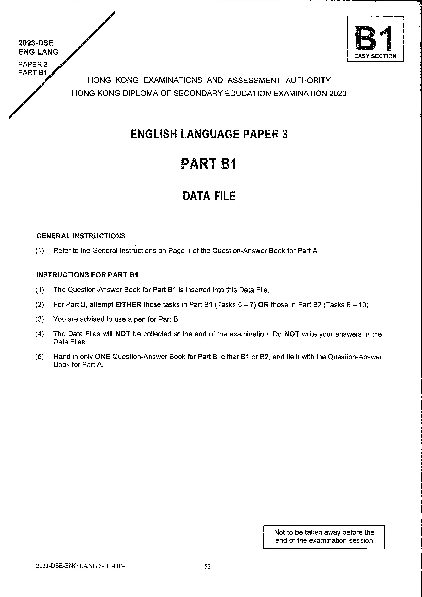

原生文字重建
2023-DSE
ENG LANG
PAPER 3
PART B1
ENG LANG
PAPER 3
PART B1
B1EASY SECTION
ENGLISH LANGUAGE PAPER 3
PART B1
DATA FILE
GENERAL INSTRUCTIONS
Refer to the General Instructions on Page 1 of the Question-Answer Book for Part A.
請參閱甲部問答冊第 1 頁的一般指示。
INSTRUCTIONS FOR PART B1
The Question-Answer Book for Part B1 is inserted into this Data File.
乙部一問答冊夾於本資料檔內。
For Part B, attempt EITHER those tasks in Part B1 (Tasks 5 – 7) OR those in Part B2 (Tasks 8 – 10).
乙部須選答乙部一（任務 5 至 7）或乙部二（任務 8 至 10），兩者選其一。
You are advised to use a pen for Part B.
建議乙部使用原子筆作答。
The Data Files will NOT be collected at the end of the examination. Do NOT write your answers in the Data Files.
考試結束時資料檔不會收回。請勿在資料檔內書寫答案。
Hand in only ONE Question-Answer Book for Part B, either B1 or B2, and tie it with the Question-Answer Book for Part A.
乙部只須交一份問答冊（乙部一或乙部二），並與甲部問答冊綁在一起。
© Hong Kong Examinations and Assessment Authority
All Rights Reserved 2023Not to be taken away before the end of the examination session
All Rights Reserved 2023Not to be taken away before the end of the examination session
核對原卷影像

I think William’s oven temperature is too hot. Better to set the oven to 210°C or the fries will burn.
William 設定的焗爐溫度太高，改為 210°C 較好，否則薯條會焦。
Same problem here: I also changed to 210°C to avoid this.
我也遇到同樣問題，所以調低至 210°C。
Mine were OK at 220°C, but I’ve only tried the recipe once.
我用 220°C 沒問題，但只試過一次。
Thank you for the suggestion, Graham. We will look into this.
謝謝 Graham 的建議，我們會研究。
Do I need to dry the potatoes after washing them?
洗完馬鈴薯後要抹乾嗎？
Yes, you must! Water = no crunch!
一定要！有水分就不夠脆。
Good point, Julia! It is important to dry the potatoes carefully after washing them.
Julia 說得對！清洗後必須仔細抹乾馬鈴薯。
Water means that your fries will be soggy.
有水分會令薯條濕軟。
A lot of people don’t like chili – too spicy. Any idea for an alternative?
不少人嫌辣椒醬太辣，有其他選擇嗎？
Even better = smoky BBQ!
煙燻燒烤醬更好！
Thanks, Julia! We’ll try this.
謝謝 Julia！我們會試試。
Thanks, Julia! That’s my favourite sauce!
謝謝 Julia！那是我最喜歡的醬汁！
What’s the best type of cooking oil to use?
哪種食用油最好？
I like peanut oil.
我喜歡花生油。
You should try olive oil. It’s brilliant!
試試橄欖油，很棒！
Thanks for your question, Delia. We will check this out.
謝謝 Delia 提問，我們會研究。
I cooked my fries for 35 minutes and they tasted so dry! Is this too long?
我焗了三十五分鐘，薯條很乾，是否太久？
Hi Jamie! 35 minutes might be too long – we’ll check.
Jamie，你好！三十五分鐘可能太長，我們會再確認。